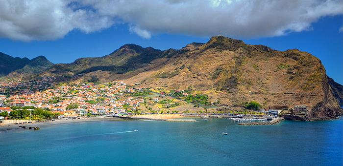

Are you looking for an unique experience?
Check out our info before you visit the best insular destiny in the world!

Bolo do Caco
Bolo do Caco is a Portuguese recipe, from Madeira Island, of a skillet bread made with sweet potato and wheat flour. It is a salty resistant bread, with a light dough and thin crust.Bolo do Caco is an ex-libris of Madeiran gastronomy. Despite having the name "cake", this is actually a type of bread that...
Read More

Machico
Located 22km from funcal, this municipality has great historical significance. It was here that Gonçalves Zarco and Tristão Vaz Teixeira landed in 1419, when they...
Read More